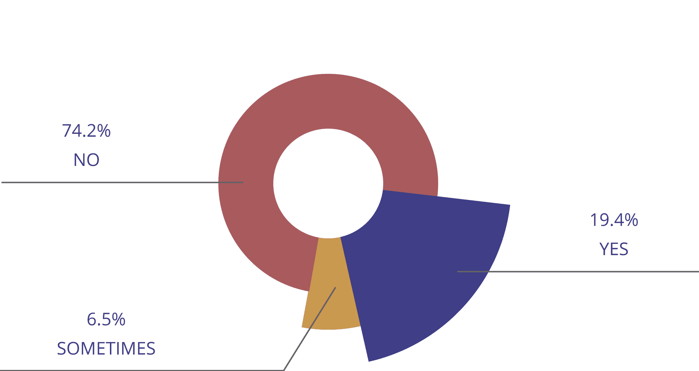
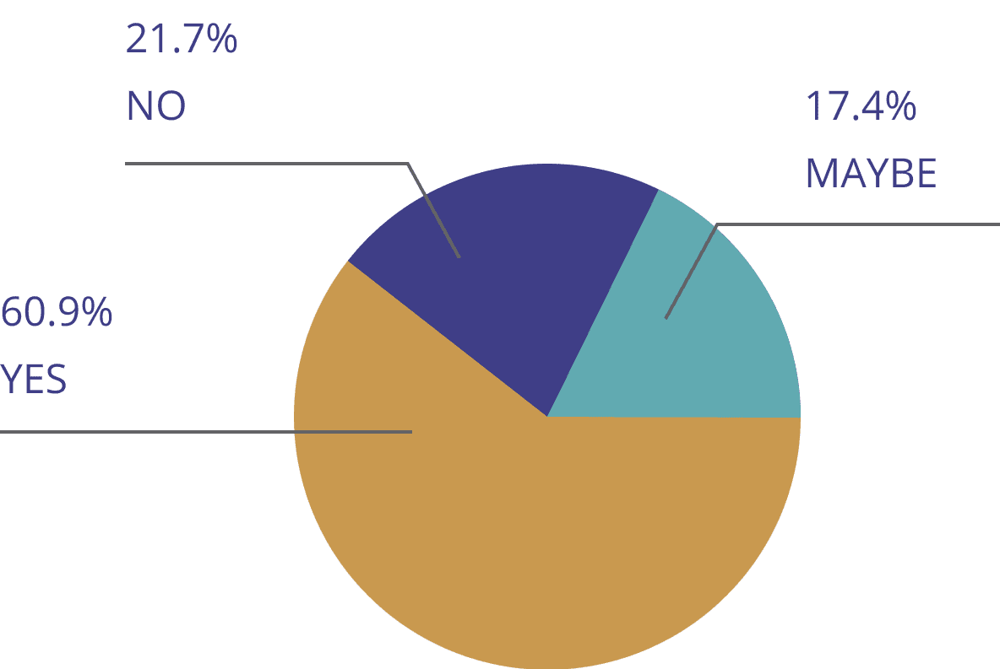
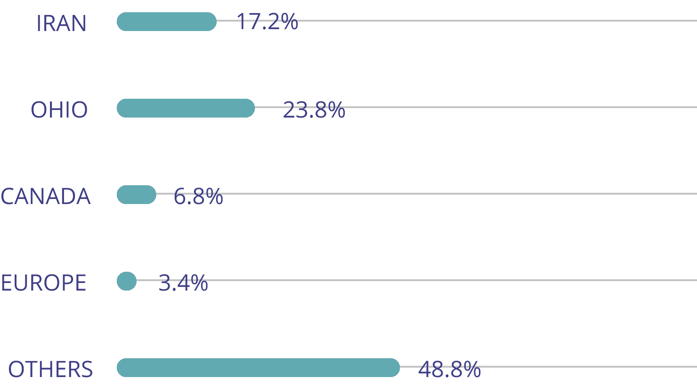

BusyBus UX Design Excercise
A platform to help the bus riders a comfortable bus commute
EXCERCISE OVERVIEW:
The concept of public transit trackers isn’t new but it provided me a wealth of opportunities to work with imperfect data that is incredibly important to the users of a given app or service. Few things will make people run faster than discovering their bus is a mere 2 minutes away from the bus stop. In this exercise, I was tasked with helping to create a mobile app called BusyBus, an application operated by the local city transit system that serves thousands of commuters in a large city.
Role Research, Visual design, Front-end
Duration 2 weeks
Tools Figma, Illustrator
PROBLEM:
Transit officials have identified a problem they would like to solve. Due to expansion, numerous bus routes have been recently added and many of those routes stop at the same bus stop. Riders want to know what the next arriving bus is and how much time they have to get to the bus stop. Simply rushing to the stop when you see a bus coming no longer works because it might not be the bus the rider is expecting. Riders are currently complaining the most about the bus stop at Washington and State, which has seven bus lines serving the stop.
SOLUTION:
BusyBus is an application to help the bus riders to know what the next arriving bus is and how much time they have to get to the bus stop.
00 Discovery Phase
To understand the bus riders’ problem space, a user survey was conducted to evaluate the bus riders and non riders on their priorities and barriers. A few of the key questions along with the answers are collected in this section to illustrate what the users really need or what they are missing in their bus commute.
User Survey Findings
25-Questions
31-Participants
-

1. Do you use bus in your daily transportation?
-
2. Have you found the mobile app beneficial to your daily commute?
-

3. Are there bus routes services available in your area of living?
-
4. What are you concerned about using a bus for daily transportation?
-
5. What do you think is the most important benefit taking bus instead of driving a personal car?
-

6. Where do you live?
See more Questions and Survey Analysis?
Survey results
I. 85.7% of the bus riders found the public transit mobile app beneficial for their daily commute.
II. 85.7% of the participants use the buses for reduced traffic congestion and 71.4% of the participants use the buses for saving money.
01 Strategy Phase
Competivie Analysis
A thorough analysis and breakdown on two available competitors in the market helped me to determine the strengths and weaknesses of the competitors within the market. As a result, I came up with interesting ideas on how a new competitor, in this case, BusyBus, could enter the market.
To observe the comprehensive findings on SWOT analysis click here.
Market entry strategy
Based on the analysis, I was able to answer “How a new competitor enter the marketplace?”.
I. Fees:
Since the google map provides a comprehensive services for free, it’s a fierce competitor for any new navigation app. Unless the new app provides very new and interesting information which cannot be found on google maps.
II. Live Alert:
My recommendation for the new competitor is to provide the users with a variety of alerts feature including get-on alerts, get-off alert, arrival time update alert, etc. The users need to be provided with enable/disable feature for the alerts just in case they do not like receiving information.
III. The variety of the services:
I believe the new competitor needs to provide a variety of services to the users and give the ability to the users to be able to make choices on the application features. If the app gets so complicated, it’s a barrier for the public for everyday use.
IV. Simplicity and user-friendly app:
For the new competitor, I would recommend to have a simple and user-friendly application. The users should have the ability to select the required features while installing the app.
V. Route type:
The users need to be aware of the available route options and make a choice in a short time. The competitor should provide the user with more route sorting based on the quickest route vs. the cheapest available route or live-alert them on the estimate price or time duration depending on the travel time. Then users might be able to sacrifice time to save more money on the trip.
02 Information Architecture
User Stories
A list of high priority tasks has been created for the minimum viable product (MVP) design. The importance of each task is assigned by considering the participants responses percentage in the user survey.
I. If the participants response percentage to a certain concern was higher than 50%, the task is considered as High.
II. If the participants response percentage to a certain concern was between 20% and 50%, the task is considered as Medium.
III. If the participants response percentage to a certain concern was lower than 20%, the task is considered as Low.
As a user, I want to receive:
1. Real-time information on bus routes
2. Bus operation hour
3. The available bus routes
.
.
.
Paper Prototype
The prototype is designed in a way to cover five high priority tasks of the users specified in user stories. The user would like to be informed on what is the next arriving bus is and how much time they have to get to the bus stop.
Usuability Test
The created three-screen paper prototype of the proposed application was tested with three potential users. Based on a usability test script, the paper prototype has been tested and modified based on the findings and feedbacks from the users.
Usability test finding for the initial paper prototype:
1. The overwhelming information for each suggested route
2. Confused user about the suggested route with the walking person as the walking route
3. Confused user about the earlier-later options at the last screen
.
.
.
03 Visual Design Iterations
Based on the usability test findings as well as the Bloc program experts evaluation, the following presents the visual design iterations over the project timeframe.
04 Development Phase
Testing to confirm the high fidility mockup functionality, it was the time to develop the front-end platform. Using HTML, CSS, GitHub, Git Bash, and Atom, the main screen of Busy Bus has been developed.